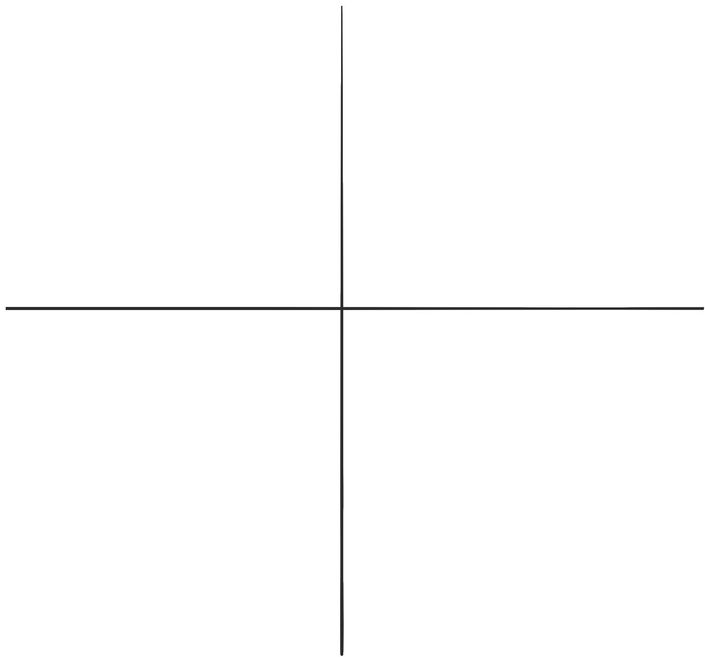

Question 1
Right Eye
Please record the gross retinoscopy (i.e without removing the working distance) in the box
You may provide your answer in positive or negitice cylender format as a power cross.
DO NOT ENTER YOUR FINAL PRESCRIPTION HERE
Rotate Power Cross then complete power fields
Active
{{mamaValue180}}
{{mamaValue90}}

Alternatively enter your answer using Spherocylinder format